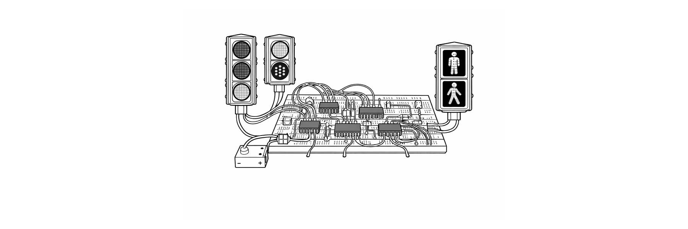

Project
Develop an electronic system capable of simulating the coordinated operation of vehicular and pedestrian traffic lights.
A control system for three traffic lights (two vehicular and one pedestrian) was built using integrated circuits and analog electronic components. The system controls the lighting transitions to simulate the real behavior of an urban crossing without programming.
System electronic design, circuit assembly, and sequential operation.
The functional behavior of a coordinated traffic light system was successfully simulated.